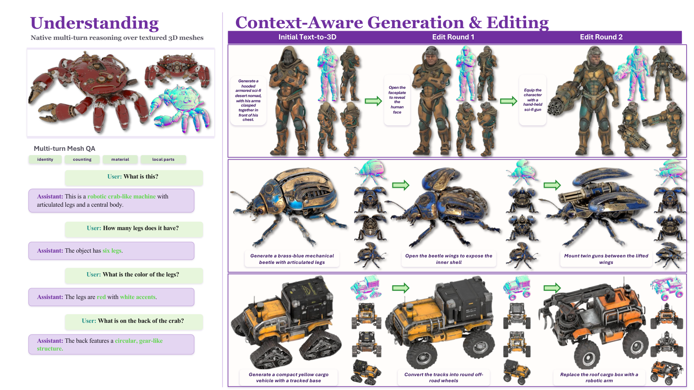
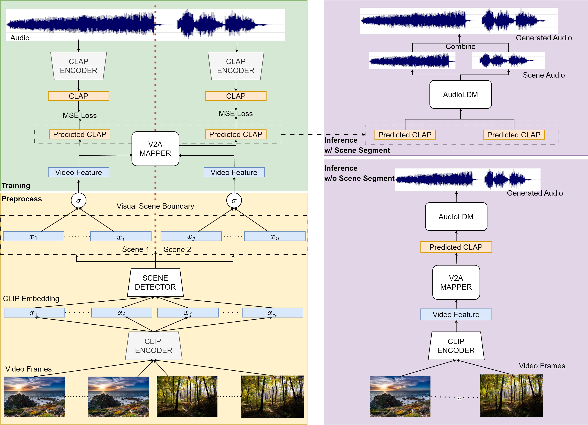

Mingjing '1mage' Yi
M.S. in Computer Science · Columbia University
Research Assistant, Mobile X Lab · Research Intern, SeeleAI · Applied Scientist Intern, Microsoft
As an AI-native researcher, I work on multimodal models and generative AI, with interests spanning 3D understanding and generation, agentic systems, and model adaptation.
About
I'm a Computer Science M.S. student at Columbia University and a Research Assistant at the Mobile X Lab, co-advised by Prof. Xia Zhou and Prof. Changxi Zheng. I am an AI-native researcher working at the intersection of multimodal learning, generative AI, and 3D intelligence. My research explores unified representations and learning frameworks that connect language, vision, and 3D, with broader interests in agentic systems, model adaptation, and AI-augmented research workflows.
News
-
Our work EVA01 was accepted to SIGGRAPH Asia 2026—see you in Kuala Lumpur, Malaysia!
-
Our work MBench was accepted to ACM MM 2026—congratulations to all collaborators!
-
Our work RollingPol was accepted to ACM MobiCom 2026—see you in Austin, Texas!
-
Excited to join Microsoft as an Applied Scientist Intern on the Frontier Tuning team in Redmond!
-
Excited to join Columbia's Mobile X Lab as a Research Assistant, co-advised by Prof. Xia Zhou and Prof. Changxi Zheng!
-
Our V2A-SceneDetect work was accepted to APSIPA ASC 2025—see you in Singapore!
-
Thrilled to begin my M.S. in Computer Science at Columbia University and start a new chapter in New York City!
-
Graduated from Duke Kunshan University with a B.S. in Computer Science—grateful for everyone who shaped this journey!
-
Excited to join SeeleAI as a Research Intern and explore multimodal generation across motion and 3D!
-
Joined SMIIP Lab at Duke Kunshan University as a Research Assistant under Prof. Ming Li, beginning my research journey in multimodal generation!
Research Interests
Publications
MBench: Rebuilding Human-Aligned Zero-Shot Evaluation for Motion-Language Models
ACM MM '26

Education
2025 – Present
M.S. in Computer Science · Columbia University
New York, NY · GPA 4.0/4.0. Coursework: LLM-based GenAI, Deep Learning, Computer Graphics, NLP, Continual Learning and Memory Models.
2021 – 2025
B.S. in Computer Science · Duke Kunshan University & Duke University
Kunshan, CN & Durham, NC · GPA 3.7/4.0. Dual B.S.: Computer Science (DKU) and Interdisciplinary Studies in Computer Science (Duke). Honors: Entrance Scholarship (75%), Dean's List (4x).
Skills
Languages: Chinese (native), English.
Contact
Feel free to reach out via email. I'm happy to chat about research and collaboration.